Druckversion als -->PDF
Wir empfehlen Ihnen, diese Anleitung vor Bearbeitung der Gefährdungsbeurteilung auszudrucken.
Wählen Sie als erstes Ihr Gewerk aus.
Geben Sie die Grunddaten Ihrer Gefährdungsbeurteilung wie Firma, Arbeitsbereich, Verantwortlicher usw. auf der Titelseite rechts neben dem Bild ein. Sie können die Daten auch jederzeit später noch eingeben oder ändern.
Am Beispiel einer Tätigkeit im Rahmen der Arbeitsvorbereitung wird die Vorgehensweise im Folgenden erläutert. Hinweise zum grundsätzlichen Vorgehen beim Erstellen einer Gefährdungsbeurteilung finden Sie hier.
Sie überlegen sich im Rahmen Ihrer Arbeitsvorbereitung zuerst, wie Ihr Arbeitsplatz und Ihre Verkehrswege aussehen werden und was Sie bei der Planung beachten müssen.
Wählen Sie oben im Menü unter dem Eintrag "Arbeitsvorbereitung / Tätigkeiten beim Kunden" das Feld „Verkehrswege, Arbeitsplätze und Transport“.
Sie erhalten in einem Pulldown-Menü eine Zusammenstellung von Auswahlbögen zu Tätigkeiten und Arbeitsbereichen, die für Ihr Gewerk in der Regel wichtig sind. Arbeiten Sie zunächst die Auswahlbögen ab, die für Sie schon zutreffen oder zukünftig relevant sein können. (Sollten für Ihren Betrieb Tätigkeiten oder Arbeitsbereiche fehlen, können Sie ergänzend Auswahlbögen hinzuladen oder ändern: siehe hierzu Kap. 4 „Ergänzen/ändern: Anpassen der Zusammenstellung“)
Sie müssen zum Beispiel Arbeitsplätze und Verkehrswege anlegen oder benutzen. Dann klicken Sie auf "Anlegen und Benutzen von Arbeitsplätzen und Verkehrswegen".
Sie sehen jetzt den Auswahlbogen zur Gefährdungsbeurteilung für den Arbeitsbereich "Anlegen und Benutzen von Arbeitsplätzen und Verkehrswegen". Sie sehen dort, welche Gefährdungen es in diesem Arbeitsbereich gibt ("Gefährdungsfaktoren"). Durch die Risikoabschätzung können Sie Ihre Maßnahmen zur Vermeidung von Gefährdungen priorisieren (siehe Kasten "Risiken einschätzen").
|
Risiken einschätzen
Zur Einschätzung der Risiken klicken Sie auf den Link "Risikoabschätzung". Dort können Sie ihr betriebsspezifische Risiko mit Hilfe einer Tabelle einschätzen, indem Sie auf die Zahl in dem ausgewählten Risikofeld klicken. Ihre Risikoeinschätzung wird dann in die Gefährdungsbeurteilung übernommen. Detaillierte Informationen über die einzelnen Risikofelder erhalten Sie, indem Sie mit dem Mauszeiger die Zahlen der Risikofelder berühren. |
Im vorliegenden Auswahlbogen zur Gefährdungsbeurteilung werden Ihnen mögliche geeignete Maßnahmen vorgeschlagen. Wählen Sie nun aus diesen Maßnahmen diejenigen aus, die Sie und Ihre Beschäftigten anwenden werden.
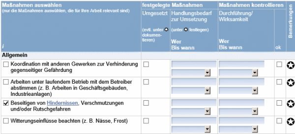
Damit diese Maßnahme umgesetzt wird, legen Sie fest, wer für die Umsetzung der Maßnahme verantwortlich ist. Im Beispiel entscheiden Sie sich für den Mitarbeiter Hermann Meier, der angewiesen wird, sich laufend um diese Frage zu kümmern.
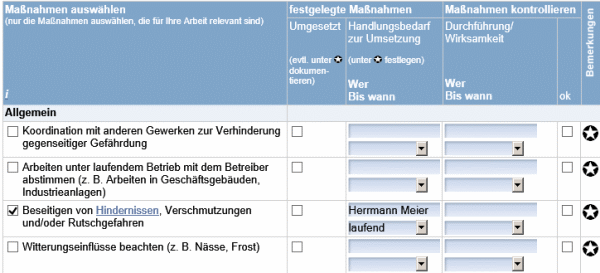
Um die Art der Maßnahme genauer zu beschreiben oder mitgeltende Dokumente (Arbeitsanweisungen, Betriebsanweisungen usw.) festzulegen, klicken Sie auf den Bemerkungs-Stern. Im Bemerkungsfeld können Sie die Regelungen präzisieren. Am Bildschirm sind max. 3 Zeilen gleichzeitig zu sehen, im Ausdruck alle.
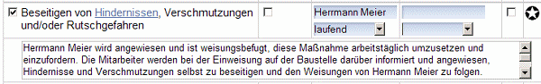
Um die kontinuierliche Umsetzung und die Wirksamkeit der festgelegten Maßnahme zu kontrollieren, legen Sie die Person und den Zeitpunkt der Kontrolle fest.
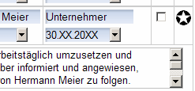
Auf diese Weise legen Sie im Auswahlbogen alle weiteren nach Gefährdungsbeurteilung notwendigen Maßnahmen fest. Das sind in der Regel sehr viel weniger als die Ihnen angebotenen Maßnahmen.
Falls Sie Maßnahmen festgelegen wollen, die nicht aufgeführt sind, haben Sie die Möglichkeit, am Ende des Auswahlbogens Blanko-Felder zu nutzen. Dort können Sie Maßnahmen frei eintragen. Durch klicken auf „+“ stehen maximal fünf Blanko-Felder zur Verfügung.
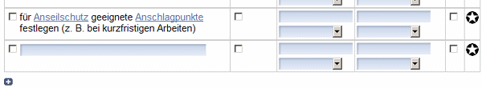
Entsprechend dieser Vorgehensweise wählen Sie aus dem Menü alle relevanten Auswahlbögen zur Gefährdungsbeurteilung aus. Diese bearbeiten Sie dann in der gleichen Art, wie den Auswahlbogen "Anlegen und Benutzen von Arbeitsplätzen und Verkehrswegen".
Wenn Sie nach der Bearbeitung feststellen, dass Sie in den Auswahlbögen der vorgegebenen Zusammenstellung einen Begriff nicht finden, prüfen Sie zunächst, ob der Begriff nicht doch in einem Auswahlbögen der Zusammenstellung für das gesamte Gewerk enthalten ist. Hierzu dient die Suchfunktion am unteren Ende der rechten Bildschirmspalte. Geben Sie im Feld „Suche im Gewerk xxx“ den Suchbegriff ein. Probieren Sie auch ähnlich Begriffe.
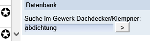
Es erscheint folgende Meldung:
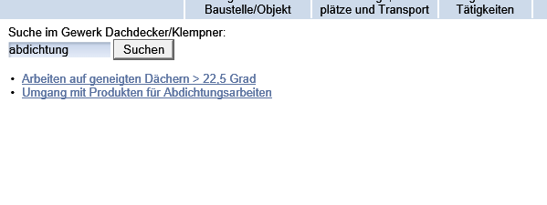
Erscheint jedoch diese Meldung
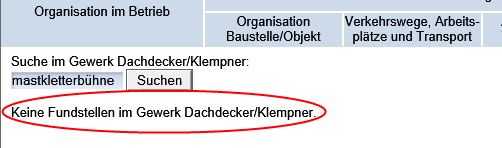
können Sie entweder ein Blankofeld nutzen oder, wie im nachfolgenden Kapitel “Ergänzen/ändern: Anpassen der Zusammenstellung“ beschrieben, weitere Auswahlbögen hinzufügen.
Zur Spalte "Umgesetzt"
Diese Spalte bietet Ihnen folgende Möglichkeiten:|
Weitere Informationen per Link
Während der Bearbeitung haben Sie jederzeit die Möglichkeit, sich über die vorhandenen Links weiter zu informieren. Wenn Sie im Beispiel oben in der Zeile über dem ersten Blanko-Feld auf den Link "Anseilschutz" klicken, erhalten Sie folgende weitere Informationen |
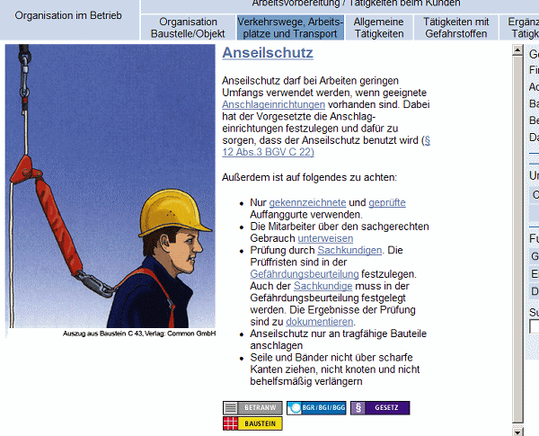
Durch die Funktion „Ergänzen/ändern“ können Sie die Zusammenstellung in den Pulldown-Menüs Struktur Hinzufügen oder Streichen von Auswahlbögen variieren und die Gefährdungsbeurteilung optimal an Ihren Betrieb anpassen. Hierzu dienen die grün unterlegten Zeilen der Pulldown-Menüs.
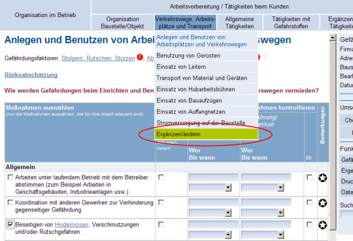
Klicken Sie auf die grün unterlegte Zeile „Ergänzen/ändern“. Sie kommen zur Seite „Gefährdungsbeurteilung ergänzen/ändern“, mit der Sie die Gefährdungsbeurteilung an Ihre betrieblichen Gegebenheiten anpassen können.
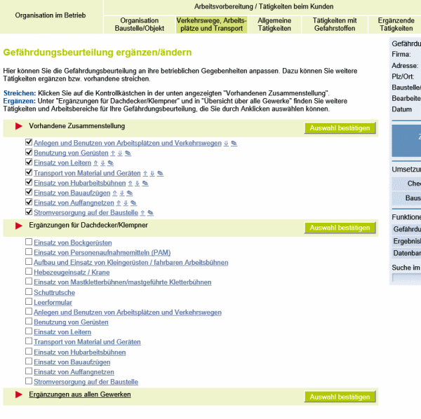
In den Ergänzungen für das gerade aktivierte Gewerk, hier Hochbau, werden weitere Auswahlbögen, die im Rahmen einer detaillierteren Gefährdungsbeurteilung wichtig sind, vorgeschlagen. Sie finden zum Beispiel den Auswahlbogen „Einsatz von Mastkletterbühnen/mastgeführte Kletterbühnen“. Ob der Inhalt für Sie relevant ist, können Sie durch Klicken auf den Text testen und Sie erhalten zur Information:
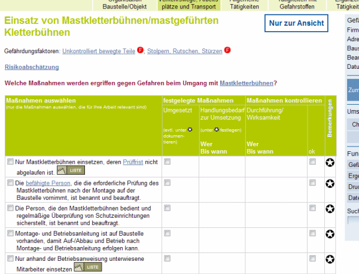
Wenn Sie diesen Auswahlbogen in Ihre Zusammenstellung übernehmen wollen, klicken Sie das entsprechende Auswahlkästchen an:
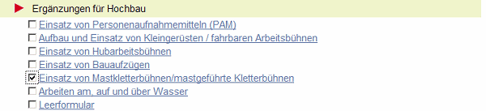
Bestätigen Sie durch den Button „Auswahl bestätigen“ die Übernahme:
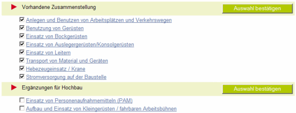
Finden Sie den Begriff nicht oder suchen Sie einen Inhalt aus einem anderen Gewerk, nutzen Sie den Bereich „Übersicht über alle Gewerke“. Hier finden Sie alle hinterlegten Auswahlbögen.
Sie können die komplette Liste durchgehen oder Sie nutzen die Suchfunktion in den „Ergänzungen aus allen Gewerken“.
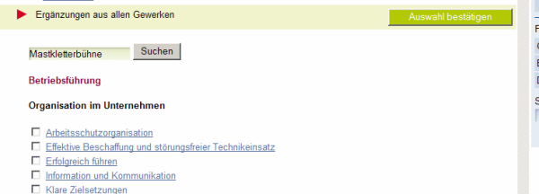
Sie erhalten Hinweise auf weitere Auswahlbögen, die Sie wie oben beschrieben übernehmen können. Alle gewünschten Änderungen in der „Vorhandene Zusammenstellung“ müssen Sie durch „Auswahl bestätigen“ bestätigen. Nachdem Sie die Zusammenstellung erweitert haben, aktivieren Sie diese durch Anklicken des Buttons „Zum Bearbeiten der Gefährdungsbeurteilung“.
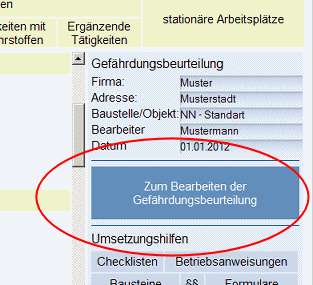
Nun können Sie die neuen Auswahlbögen bearbeiten, die im Pulldown-Menü aufgeführt werden.
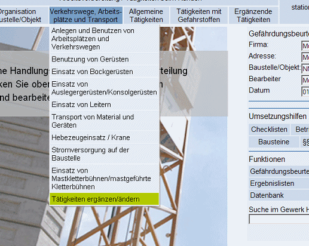
Wenn Sie so alle Tätigkeiten und Arbeitsbereiche beurteilt und die Maßnahmen festgelegt haben, speichern Sie Ihre Gefährdungsbeurteilung ab. Dazu klicken Sie rechts unter "Funktionen" "Gefährdungsbeurteilung" im Menü auf "Speichern unter" und geben Ihrer Gefährdungsbeurteilung einen Dateinamen. Vorgeschlagen wird Ihnen ein Dateinamen, der sich zusammensetzt aus dem Namen des ausgewählten Gewerks sowie, wenn von Ihnen eingegeben, der Baustelle/des Objekt und dem Datum. Sie können diesen Dateinamen natürlich ändern. Die Speicherdatei können Sie auf Ihrem Rechner nach Ihrer Systematik ablegen.
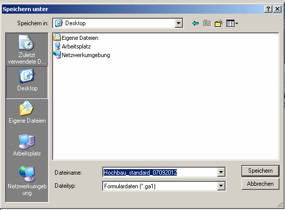
Um sich die Ergebnisse Ihrer Gefährdungsbeurteilung anzuschauen, klicken Sie rechts unter der Überschrift "Funktionen" auf "Ergebnislisten".
|
Damit haben Sie - bis auf die Kontrolle der Wirksamkeit der festgelegten Maßnahmen - Ihre Gefährdungsbeurteilung erstellt. |
Kontrolle der Umsetzung und der Wirksamkeit der festgelegten Maßnahmen
Sie haben mehrere Möglichkeiten, die Umsetzung und Wirksamkeit der festgelegten Maßnahmen zu kontrollieren:
Wenn Sie systematisch mit der Gefährdungsbeurteilung vorgehen wollen, betrachten Sie Ihren gesamten Betriebsprozess und beginnen bei Ihrer Betriebsführung:
Dazu gehen sie oben im Auswahlmenü auf den ersten Punkt "Organisation im Betrieb ":
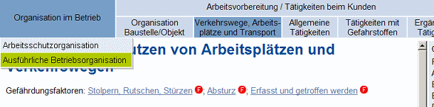
Im zunächst aufrufbaren Auswahlbogen werden die Basisthemen der Arbeitsschutzorganisation eines Betriebes angesprochen.
Möchten Sie die grundlegenden Prozesse in Ihrem Unternehmen systematisch nach möglichen Gefährdungen und Verbesserungsmöglichkeiten durchgehen, fügen Sie unter „Ausführliche Betriebsorganisation“ weitere Auswahlbögen hinzu und betrachten Sie zunächst Ihre Aufbauorganisation. Hier können Sie viele Prozesse grundlegend einmal festlegen und brauchen dadurch nicht bei jedem einzelnen Bereich und jeder einzelnen Tätigkeit immer wieder von vorne mit der Organisation beginnen. Wenn Sie beispielsweise einmal gründlich die Unterweisung im Unternehmen organisiert haben, müssen Sie sich nicht bei jeder Tätigkeit einzeln tun. Gehen Sie dazu die einzelnen zusätzlichen Auswahlbögen systematisch durch.